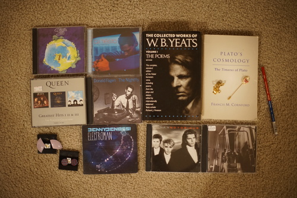

I went Christmas shopping with Ryan! I found a present for secret santa at work (which is absolutely rigged btw) and he found some presents for his family.
A vintage/record store popped up in town somewhat recently. I kinda forgot about it, but we walked by it so I forced Ryan to go in with me. It was super crowded and filled with trendy zoomers. Even though I pass as a (non-trendy) zoomer, I can't be considered one by any definition. I can only take being surrounded by girls in sweatpants and straight boys with gay earrings for so long.
I was pretty unimpressed until Ryan showed me the CD stacks. They had a much more curated collection of CDs than thrift stores, so even though they were $3, it was worth buying a few. I found probably 10 I would have bought for $1, but I ended up only buying 2. New wave feels harder to find than it should be, but CDs didn't fully catch on until later new wave. Nu-metal guilty pleasures not high on the list were left behind. I found Ryan a few ones he's been looking for though!
I found a copy of Depeche Mode People are People and I noticed there was an area at the end of the disc where you could see right through it. And the last song was Everything Counts too ;_____;!!! The people working there were willing to play the last song for me. I listened and listened and everything seemed to go fine until it cut out at the very very end. It was kinda funny to watch the other 2 employees panic "where da music at?!?!" Please note the version on this album is 7'20" and it's a long song! Anyway, he offered it to me for $1 because of that.

I think asunder managed to rip it though! It took a few minutes to get the end of the disc but it did it!
I also discovered they had a case full of SLRs and lenses! Unfortunately, it was placed right under the register so it made looking at it nearly impossible with the constant stream of people wanting to buy ugly shirts and piles of records. They had a Canon FL 35mm f/2.5 for $55 which I will go back to try with my camera sometime. I really wanted him to pull out an FD mount macro lens though!
I think my mom will like this!
After all this, it was a complilation album ;_; Oh well, I'm still happy to get it.